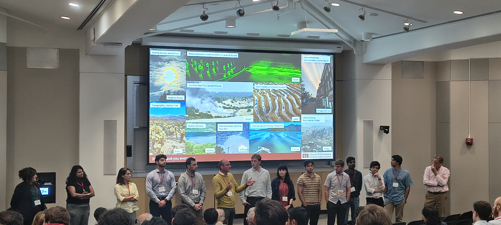
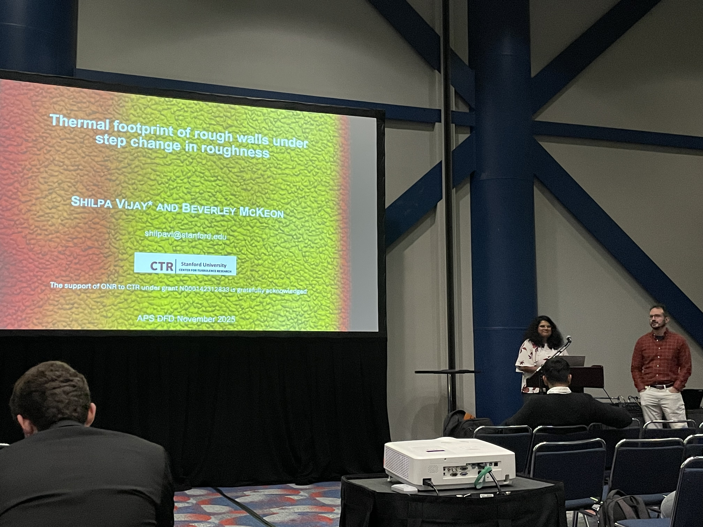
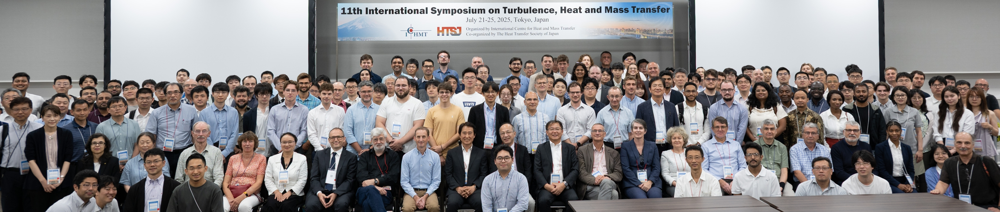

News
Jul 2026
CTR Summer Program — Group Leader

Served as Group Leader for the Environmental Fluid Mechanics subgroup at the 20th Biennial CTR Summer Program, managing research activities for 8 visiting groups.

Jul 2026
TSFP-14 Oral Presentation, Heidelberg
Presented "Thermal Boundary Layer Development over a Step Change in Surface Roughness" at the 14th International Symposium on Turbulent and Shear Flow Phenomena.
Feb 2026
Profiled in The Scientist Magazine
Featured in The Scientist's Postdoc Portrait series, highlighting research and career path as an experimental fluid mechanicist at Stanford's Center for Turbulence Research.
Read Article ↗Nov 2025

APS DFD 2025, Houston
Presented "Thermal footprint of boundary layer under step change in surface roughness" at the 78th Annual Meeting of APS Division of Fluid Dynamics.
Jul 2025

THMT-11 Presentation, Tokyo
Presented "Experimental investigation of turbulent heat transfer over roughness elements" at the 11th International Symposium on Turbulence, Heat and Mass Transfer.

May 2025
Pint of Science Talk
Selected to present "The Secret Life of Turbulence" at the international Pint of Science festival, communicating research to non-specialist audiences.
Mar 2025
Invited Seminar, UC Berkeley
Presented "Towards designer porous surfaces for multi-functional passive flow control" at the Applied Mathematics Seminar, Department of Mathematics, UC Berkeley / Lawrence Berkeley Laboratory.
Jan 2025
MEGM Seminar, Stanford
Invited talk: "Yes-And: Improv-ing in Research -- Lessons in Adaptability and Creativity" at the Mechanical Engineering Women and Gender Minorities Group Annual Seminar Series.
Aug 2024
Paper Published in Experiments in Fluids
Vijay, S., Luhar, M. "Pressure drop measurements over anisotropic porous substrates in channel flow." Exp Fluids 65, 135 (2024).
Read Paper ↗Apr 2024
Shilpa Joins Stanford CTR
Started as a Postdoctoral Fellow at the Center for Turbulence Research, Stanford University, working with Prof. Beverley McKeon on turbulent heat transfer over rough surfaces.
Oct 2023
PhD Defense
Successfully defended PhD dissertation "Flow and Thermal Transport at Porous Interfaces" at the University of Southern California.